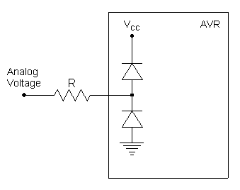

The analog comparator is a useful peripheral to compare two analog signals. For instance, you can compare the output of a temperature sensor with a reference voltage, and take some action when the temperature exceeds the level corresponding to the reference voltage.
The Analog Comparator has two stages. The first one is the Analog Comparator itself, which has two inputs: Analog Input 0 (AIN0) and Analog Input 1 (AIN1). If AIN0 is greater than AIN1, the output of the Analog Comparator is high. On the other hand, if AIN1 is greater than AIN0, the output of the Analog Comparator is low. The second stage takes the output of the Analog Comparator and sets the corresponding interrupt flag (ACI) and the Analog Comparator Output Flag (ACO). The following figure shows a simplified scheme of the Analog Comparator :
Since AIN0 and AIN1 are the alternate functions of two Port B pins, you must set the data direction bits accordingly (which pins are connected to the Analog Comparator depends on the particular AVR you are using, check the datasheet). Clear DDBx and DDBy to set the pins as an input, and clear PBx and PBy to disable the internal pullup resistor.
The Analog Comparator is quite simple and has only one register : the Analog Comparator Control and Status Register (ACSR):
| Bit 7 | Bit 6 | Bit 5 | Bit 4 | Bit 3 | Bit 2 | Bit 1 | Bit 0 |
|---|---|---|---|---|---|---|---|
|
ACD
|
---
|
ACO
|
ACI
|
ACIE
|
ACIC
|
ACIS1
|
ACIS0
|
ACD (Analog Comparator Disable) bit : If you want to disable the Analog Comparator (for instance, to reduce power consumption), you must set this bit. A word of caution : you must disable the Analog Comparator interrupt before disabling the Analog Comparator to avoid an unintentional interrupt.
ACO (Analog Comparator Output) bit : Is the output of the Analog Comparator. You can read this bit to determine the current state of the Analog Inputs. What the output states mean is described above.
ACI (Analog Comparator Interrupt Flag) bit : This bit is set when a comparator output triggers the interrupt mode defined by ACIS bits (see below for details). Also, if the Global Interrupt and the Analog Comparator interrupt is enabled, the Analog Comparator interrupt service routine is executed. ACI is cleared by hardware when executing the corresponding interrupt handling vector. Alternatively, ACI is cleared by writing a logical 1 to the flag. YES, it's not a typo: you must write a 1 to clear the flag. This has a nasty side effect : if you modify some other bit of ACSR using the SBI or the CBI instruction, ACI will be cleared if it was set before the sbi/cbi operation.
ACIE (Analog Comparator Interrupt Enable) bit : When the ACIE bit is set and global interrupts are enabled, the Analog Comparator interrupt is activated. When cleared, the interrupt is disabled.
ACIC (Analog Comparator Capture Enable) bit : One interesting thing you can do, is to connect the Analog Comparator output to the Timer1/Counter1 Input Capture function. In this way, you can measure the time between two events in the Analog Comparator. If you want to use this feature, set this bit.
ACIS (Analog Comparator Interrupt Mode Select) bits : you can choose when the the Analog Comparator Interrupt Flag (ACI) will be triggered. There are three possibilities. When the Analog Comparator output changes from 0 to 1 (rising output edge), when the Analog Comparator Output changes 1 to 0 (falling output edge), or whenever the Analog Comparator output changes (output toggle). As with the ACD bit, you must disable the Analog Comparator interrupt when you change these bits to avoid unwanted interrupts.
| ACIS1 | ACIS0 | Interrupt Mode |
|---|---|---|
|
0
|
0
|
Interrupt on output toggle |
|
0
|
1
|
Reserved (don't use) |
|
1
|
0
|
Interrupt on falling output edge |
|
1
|
1
|
Interrupt on rising output edge |
Some AVRs have a more complex (see datasheets) Analog Comparators. They are equal to the Analog Comparator explained here, but in addition, you can use an internal voltage reference or one of the inputs of the Analog to Digital Converter as one of the Analog Inputs.
CAUTION :
You MUST respect the voltage range allowed for the AVR pins (see Maximum Absolute Ratings in the Electrical Characteristics section of the datasheet). The voltage must be below VCC+0.5V and above -1V. If you don't respect this, you will blow your AVR. Be sure that the analog signals you are using are in the right range. If they come from the external world, is a good idea to use some kind of protection at the input. See the suggested circuit below (which consists of just one resistor...).

This circuit uses the internal clamping diodes present in all AVR I/O pins. If the analog voltage is higher than Vcc plus the conduction voltage of the diode (around 0.5V), the upper diode will conduct and the voltage at the input pin is clamped to Vcc+0.5 . On the other hand, if the analog voltage is lower than 0V minus the conduction voltage of the diode, the lower diode will conduct, and the voltage at the input pin is clamped to 0.5V. The resistor will limit the current through the conducting diode, which must not exceed 1mA, so you must design the resistor accordingly. For instance, if you expect that the max value that may reach the analog voltage is ±24V, the resistor value should be :
R=24V/1mA=24K.